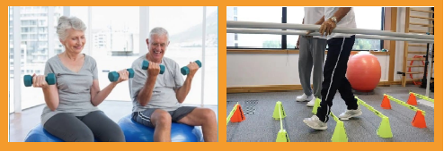
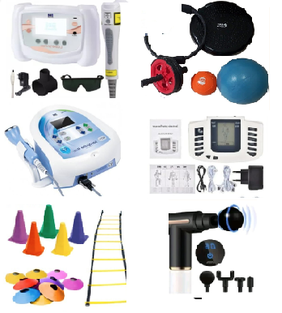

Karen Rosa
Retome a sua independência ou a independência do seu familiar com um atendimento humanizado, personalizado e individualizado.
É UM PRAZER TER VOCÊ AQUI!
Primeiramente, vou te contar um pouco do meu trabalho e qualificações:
Sou Fisioterapeuta Especializada em Gerontologia, movida pela paixão de cuidar da saúde funcional da pessoa idosa. Há mais de 3 anos atuo com atendimento domiciliar, reabilitando vidas e devolvendo autonomia no conforto do lar. Com experiência prévia em hospitais e lares de idosos, busco sempre o aperfeiçoamento contínuo. Possuo diversos cursos de qualificação, entre eles:
Como é feito o meu atendimento:
O cuidado começa com uma avaliação minuciosa, onde aplico testes específicos para compreender a fundo a saúde e as necessidades atuais do paciente.
Com base nesse diagnóstico, traço um plano de tratamento exclusivo e totalmente personalizado.
A partir disso, damos início às sessões de fisioterapia no conforto e na segurança do seu lar.
O que é trabalhado durante os atendimentos?
Com atendimentos personalizados de aproximadamente 45 minutos, meu foco é tratar as necessidades individuais de cada paciente através do pilar:
Fortalecer – Ganhar – Melhorar.
Durante as sessões, desenvolvemos treinos específicos para os objetivos de cada um, incluindo exercícios de:


Equipamentos utilizados
Nos atendimentos domiciliares são utilizados diversos recursos terapêuticos, entre eles:
Como posso te ajudar?
Dificuldades para caminhar?
Falta de equilíbrio e coordenação?
Fraqueza muscular?
Perca de mobilidade?
Dificuldade para realizar as tarefas cotidianas?
Está passando por um pós-cirurgico?
Te ajudo a retormar a sua independência ou a independência do seu familiar.
Conheça algumas vantagens do atendimento a domicílio:
Todos equipamentos no conforto do seu lar.
Tratamento personalizado e individualizado.Atenção voltada totalmente ao paciente.
Tratamento no ambiente familiar com conforto e comodidade.
Avalições e orientações constantes.
Processo de reabilitação mais integrado ao cotidiano do paciente.
Elimina a necessidade de deslocamento economizando tempo e reduzindo o estresse.
Qual o valor do atendimento?
O valor do atendimento depende do local, por isso é necessário informar o bairro ou ponto de referência para consultar o valor.
Formas de pagamento: Pix e cartão.
Confira os pacotes com Desconto a partir de 10 sessões com pagamento via pix na primeira sessão. Aceito parcelamento, mas terá o acréscimo do juros da máquina.
Consultar valores